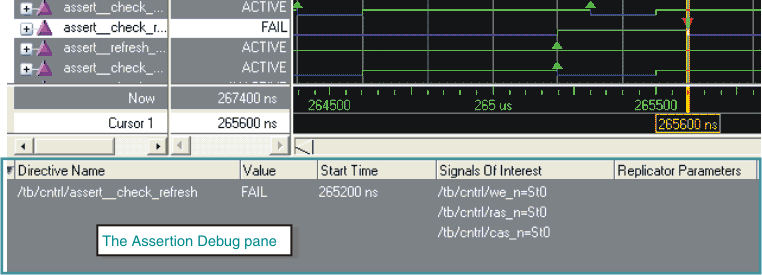

If you used the -assertdebug argument
with the vsim command when you invoked the simulator, you can view
the details of assertion failures in the Assertion Debug pane of
the Wave window. The steps to view assertion failures are as follows.
Procedure
- To open
the Assertion Debug pane in an undocked Wave window, select .
To view the debug pane when the Wave window is docked in the Main
window, make the Wave window active then select .
- Click a red triangle on an
assert directive waveform (the red triangle indicates a failed assert
directive) to display debug information about the failed assertion.
Figure 1. Assertion Debug Pane
in Wave Window
The Signals of Interest column
displays the signals responsible for the assertion failure. You
can analyze these signals further in the Dataflow window by right-clicking a
signal and selecting Show Signal Drivers.
Questa SIM supports
the PSL forall keyword,
which replicates designated assertions multiple times and reports
PASS or FAIL on assert directives that contain replicators. The
Replicator Parameters column displays the value of the replicator parameter
for which the assertion failed.